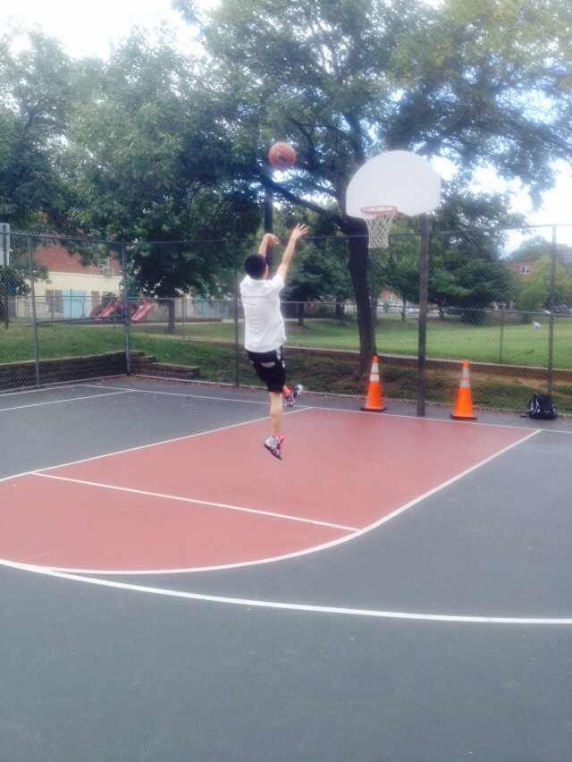
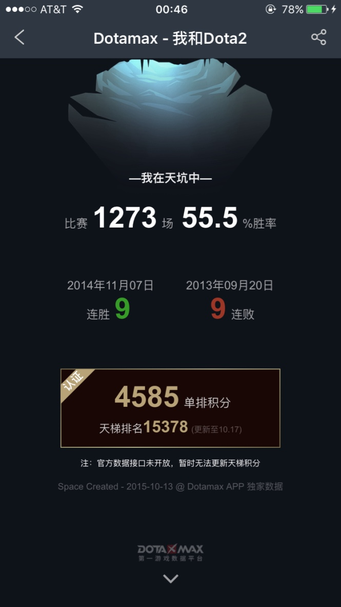
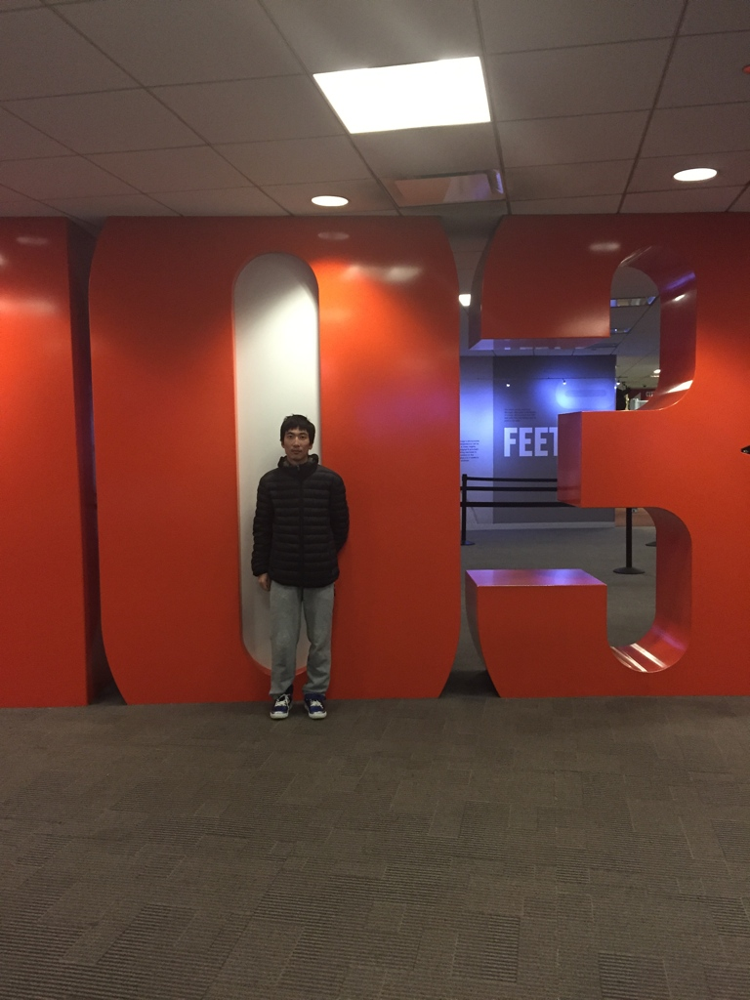
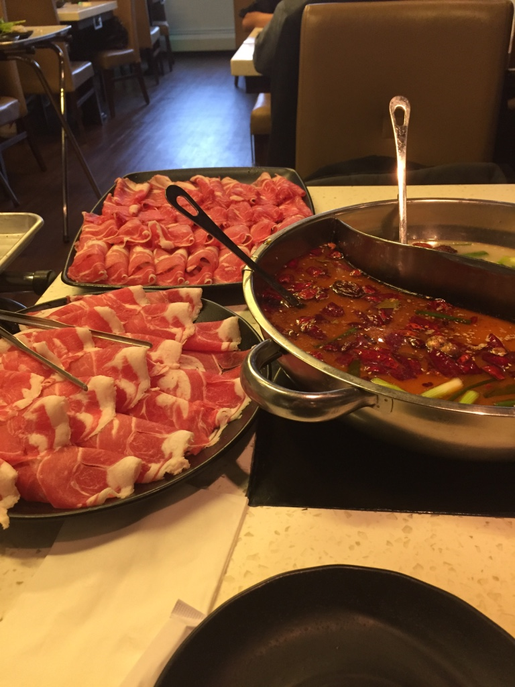

I Like Playing Basketball!
I like playing basketball since I was in primary school. I think I am a good shooter and I am also pretty fast.
 Basketball
I Like Playing Dota2
I also like playing Dota2. I am a crazy fans on the game. I started playing the game since I was in High school. I have played thousands of Dota2 matches. I also like playing PS4 games such as GTA5, ACU and NBA2k.
 Dota2
I Like Traveling
In fact I perfer to stay at home in my spare time. But I also like traveling all around. Traveling enrich my experience. So why not do that.
 TravelingI Like Eating
I also like eating all kinds of food. I am also a meat lover. My favorite food is hot pot!
 Eat